Longitudinal displacement of sound wave = A sin (ωt – kx)
Pressure excess during travelling sound wave Pex = x B (it is true for travelling = (BAk) cos(t – kx) wave as well as standing waves) Amplitude of pressure excess = BAk
Speed of sound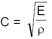
Where E = Ellastic modulus for the medium = density of medium
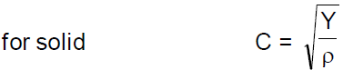where Y = young's modulus for the solid
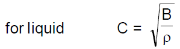where B = Bulk modulus for the liquid
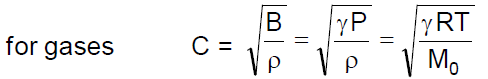where M0 is molecular wt. of the gas in (kg/mole)
Intensity of sound wave
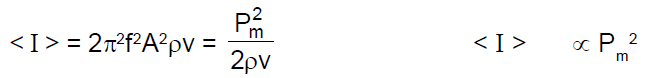Loudness of sound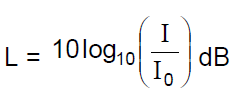
where I0 = 10–12 W/m2 (This the minimum intensity human ears can listen)
Intensity at a distance r from a point source =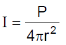
Interference of Sound Wave
if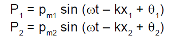
resultant excess pressure at point O is
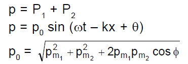where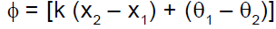
and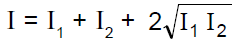
For constructive interference
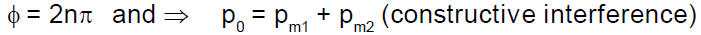For destructive interfrence
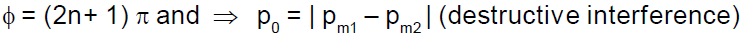If is due to path difference only then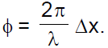
Condition for constructive interference :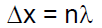
Condition for destructive interference :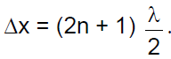
If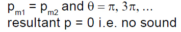
If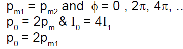
Close organ pipe :
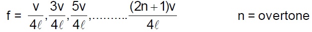Open organ pipe :
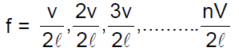Beats :Beatsfrequency =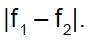
Doppler’s Effect
The observed frequency,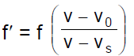
and Apparent wavelength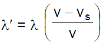